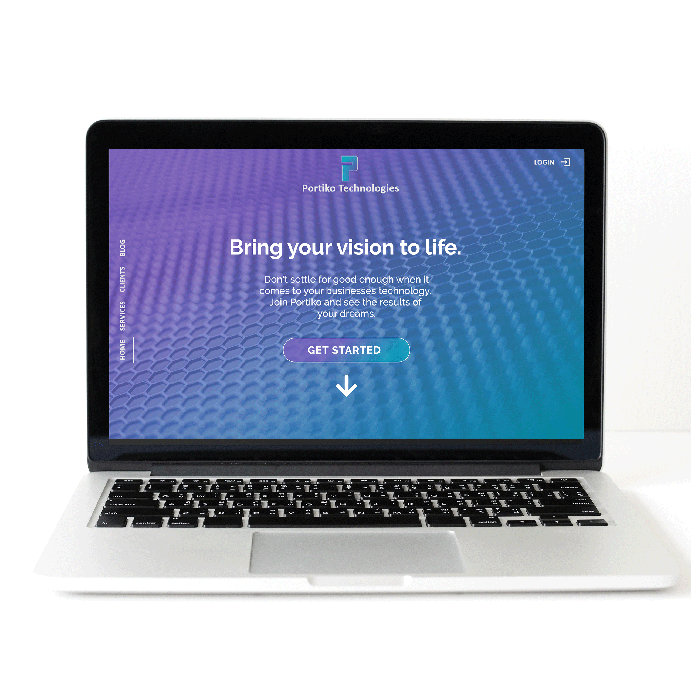
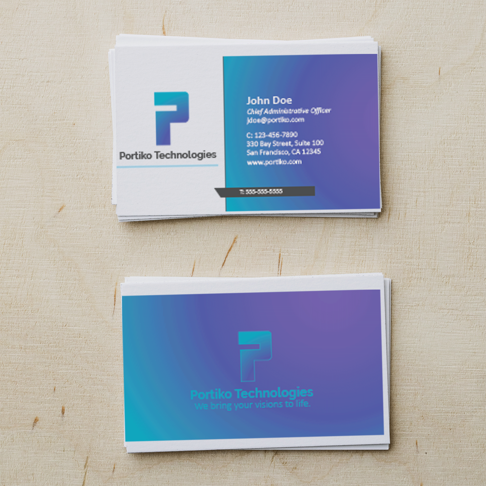
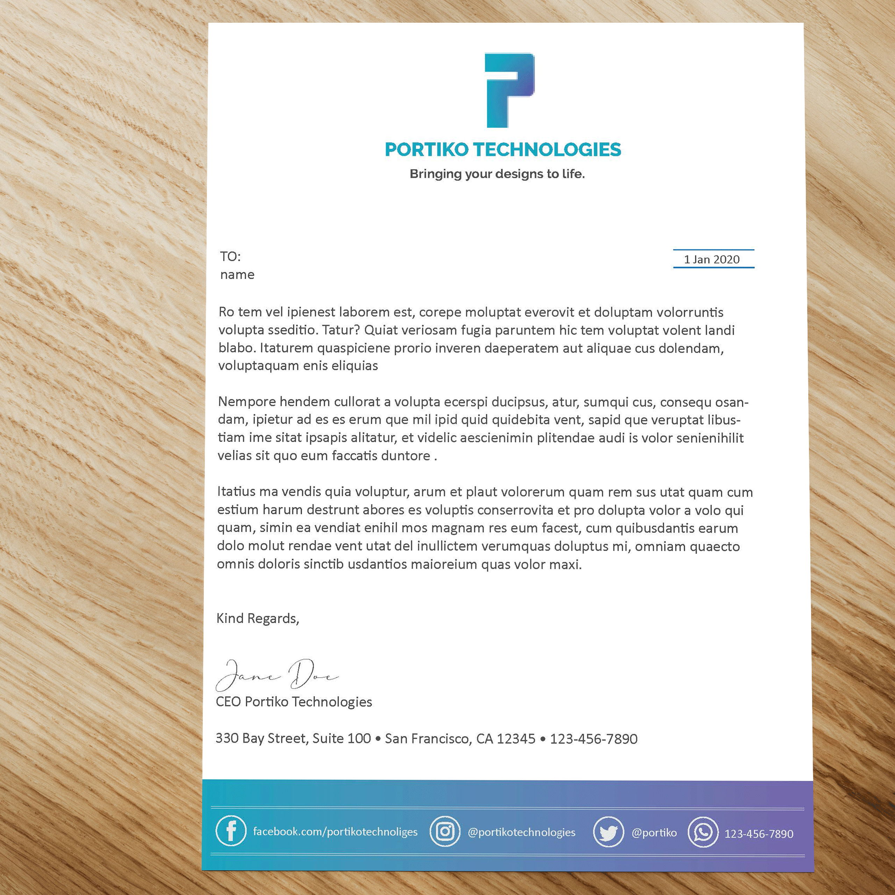
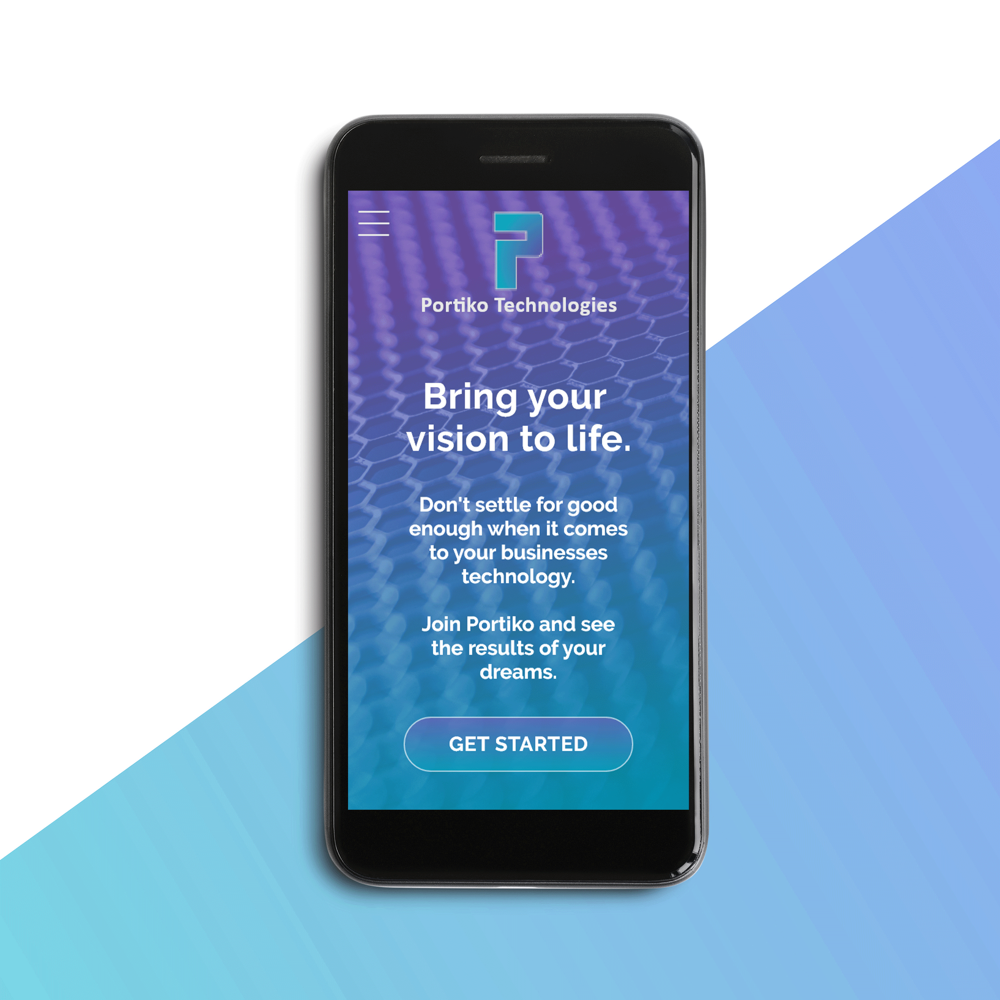

Portiko Technologies
Portiko Technologies is a fictional company based in San Francisco. Their primary goal is to become a leader in the tech industry by focusing on designing and developing mobile applications for their clients.
The target audience is the global 2000 company's. The marketing efforts will be primarily web-based. I was tasked with creating the overall brand identity to support this cutting-edge company, with everything from the logo to web design and everything in between.
Project Length
October-December 2020
Services
- Logo Design
- Brand Design
- Mobile-First Web Design
Skills
- Adobe Photoshop, XD, InDesign, Illustrator
- Brand Research


